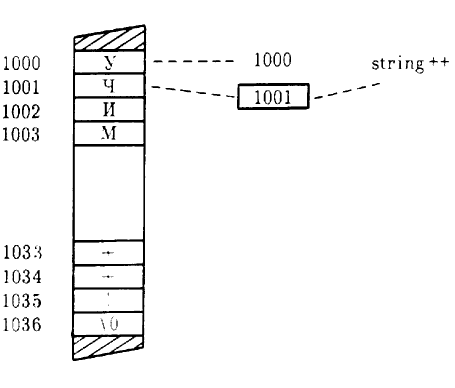

Как вы уже знаете, программы на C++ хранят переменные в памяти. Указатель представляет собой адрес памяти, который указывает (или ссылается) на определенный участок. Из урока 10 вы узнали, что для изменения параметра внутри функции ваша программа должна передать адрес параметра (указатель) в функцию. Далее функция в свою очередь использует переменную-указатель для обращения к участку памяти. Некоторые программы, созданные вами в нескольких предыдущих уроках, использовали указатели на параметры. Аналогично этому, когда ваши программы работают с символьными строками и массивами, они обычно используют указатели, чтобы оперировать элементами массива. Так как применение указателей является общепринятым, очень важно, чтобы вы хорошо понимали их использование. Таким образом, этот урок рассматривает еще один аспект применения указателей. К концу данного урока вы освоите следующие основные концепции:
Операции с указателями широко используются в C++. Выберите время для эксперимента с программами, представленными в этом уроке.
Как вы уже знаете, указатель содержит адрес памяти. Когда ваша программа передает массив (например, символьную строку) в функцию, C++ передает адрес первого элемента массива. В результате совершенно обычно для функции использовать указатель на символьную строку. Чтобы объявить указатель на символьную строку, функция просто предваряет имя переменной звездочкой, как показано ниже:
void some_function(char *string);
Звездочка, которая предваряет имя переменной, указывает C++, что переменная будет хранить адрес памяти — указатель. Следующая программа PTR_STR.CPP использует указатель на символьную строку внутри функции show_string для вывода содержимого строки по одному символу за один раз:
#include <iostream.h>
void show_string(char *string)
{
while (*string != '\0'){
cout << *string;
string++;
}
}void main(void)
{
show_string( "Учимся программировать на языке C++!");
}
Обратите внимание на цикл while внутри функции show_slring. Условие while (*string != '\0') проверяет, не является ли текущий символ, указываемый с помощью указателя string, символом NULL, который определяет последний символ строки. Если символ не NULL, цикл выводит текущий символ с помощью cout. Затем оператор string++; увеличивает указатель siring таким образом, что он указывает на следующий символ строки. Когда указатель string указывает на символ NULL, функция уже вывела строку и цикл завершается.

Рис. 20. Сканирование строки с помощью указателя.
Предположим, например, что строка, переданная в функцию, находится в памяти компьютера по адресу 1000. Каждый раз, когда функция увеличивает указатель string, он указывает на следующий символ (адрес 1001,1002, 1003 и т. д.), как показано на рис. 20.
Вы только что узнали, что, используя указатель, ваша функция может сканировать строку символов, пока не будет обнаружен символ NULL. Следующая программа PTR_LEN.CPP использует указатель на строку в функции string_length для определения количества символов в строке:
#include <iostream.h>
int string_length(char *string)
{
int length = 0;
while (*string != '\0'){
length++;
string++;
}
return(length);
}void main(void)
{
char title[] = "Учимся программировать на языке C++";
cout << title << " содержит " << string_length(title) << " символов";
}
Как видите, функция string_length сканирует символы строки до тех пор, пока не встретит символ NULL.
Увеличение указателя на символьную строку
Когда программа передает массив в функцию, C++ передает адрес памяти первого элемента этого массива. Используя переменную-указатель, функция может перемещаться по содержимому массива, просто увеличивая значение указателя. Например, предположим, что программа передает в функцию символьную строку "Привет". Внутри функции переменная-указатель сначала указывает на участок памяти, который содержит букву 'П'. Когда функция увеличивает указатель, то он далее указывает на участок памяти, который содержит букву 'р'. По мере увеличения функцией значения указателя, он поочередно указывает на каждую букву в строке и наконец указывает на символ NULL.
Чтобы определить конец символьной строки, каждая из предыдущих программ использовала следующий цикл while:
while (*string != '\0')
Как уже обсуждалось, символ NULL ('\0') представляет собой значение ASCII 0. Так как C++ использует значение 0, чтобы представить ложь, ваши программы могут записать предыдущий цикл следующим образом:
while (*string)
В данном случае пока символ, определяемый указателем строки, не равен 0 (NULL), условие оценивается как истинное и цикл будет продолжаться. Из урока 5 вы узнали, что постфиксная операция увеличения C++ позволяет вам использовать значение переменной, а затем увеличивает это значение. Многие программы на C++ используют постфиксные операции увеличения и уменьшения, чтобы сканировать массивы с помощью указателей. Например, использование постфиксной операции увеличения делает следующие циклы while идентичными:
while (*string)
{
cout << *string++;
}while (*string)
{
cout << *string;
string++;
}
Оператор cout << *string++, заставляет C++ вывести символ, указываемый указателем string, а затем увеличить текущее значение string, чтобы он указывал на следующий символ. С помощью этих методов следующая программа SMARTPTR.CPP иллюстрирует новую реализацию функций show_string и string_length:
#include <iostream.h>
void show_string(char *string)
{
while (*string) cout << *string++;
}int string_length(char •string)
(
int length = 0;
while (*string++) length++;
return(length) ;
}void main(void)
{
char title[] = "Учимся программировать на языке C++";
show_string(title) ;
сout << " содержит " << string_length(title) << " символов";
}
Если вы встретите функции C++, которые манипулируют строками с помощью указателей, то они с большой долей вероятности будут использовать подобную краткую запись.
Сканирование символьной строки
Одно из наиболее широко употребляемых использовании указателей в программах на C++ заключается в сканировании символьных строк. Для уменьшения количества кода многие программы используют следующие операторы для сканирования строки:
while (*string)
{
// операторы
string++;
// продвинуть к следующему символу
}Следующая функция string_uppercase использует указатели для преобразования символов строки в символы верхнего регистра:
char *string_uppercase(char* string)
{
char *starting_address = string; // адрес string[0];
while (*string){
if ((*string >= 'а') && (*string <= 'я')) *string = *string - 'a' + 'A';
string++;
}
return(starting_address);
}Эта функция сохраняет и возвращает начальный адрес строки, который позволяет вашим программам использовать функцию следующим образом:
cout << Btring_uppercase("Привет, мир!") << endl;
* Поскольку при переводе книги обрабатываемые символы заменены с английских на русские, то этот алгоритм работает не для всех кодировок кирилицы в DOS и Windows. — Прим. перев.
Несмотря на то что указатели широко используются с символьными строками, вы можете использовать указатели с массивами других типов. Например, следующая программа PTRFLOAT.CPP использует указатель на массив типа float для вывода значений с плавающей точкой:
#include <iostream.h>
void show_float(float *array, int number_of_elements)
{
int i;
for (i = 0; i < number_of_elements; i++) cout << *array++ << endl;
}void main(void)
{
float values[5] = {1.1, 2.2, 3.3, 4.4, 5.5);
show_float(values, 5);
}
Как видите, внутри функции show_float цикл for использует значение, указываемое с помощью указателя array, а затем увеличивает этот указатель до следующего значения. В данном случае программа должна передать параметр, который задает количество элементов массива, поскольку в отличие от символьных строк массивы типа float (или int, long и т. д.) не используют символ NULL для определения последнего элемента.
Как вы уже знаете, ваши программы могут использовать указатели на массивы любых типов. В предыдущей программе функция show_float увеличивала указатель для продвижения по массиву типа float. Указатель указывает на участок памяти, содержащий значение определенного типа, например char, int или float. Когда функция сканирует массив с помощью указателя, функция увеличивает указатель для продвижения от одного значения к следующему. Чтобы указатель указывал на следующий элемент массива, C++ должен знать размер каждого элемента (в байтах), чтобы определить, на сколько необходимо увеличить значение указателя. Например, для продвижения указа-
теля к следующему символу в массиве, C++ должен увеличить значение указателя на 1. Однако, чтобы указать следующее значение в массиве типа int C++ должен увеличить указатель на два байта (значение типа int занимает два байта памяти). Для значений типа. float C++ увеличивает указатель на 4 байта. Зная тип значения, на которое указывает указатель, C++ знает, на сколько необходимо увеличить значение этого указателя. В ваших программах вы просто используете оператор увеличения, например pointer++. Однако за кулисами C++ увеличивает реальное значение (адрес памяти), содержащееся в указателе, на корректную величину.
Программы на C++ широко используют указатели, особенно для манипулирования строками. В данном уроке рассмотрен еще один широко используемый аспект при работе с указателями. В уроке 21 вы начнете использовать объектно-ориентированные возможности C++! Для начала вы создадите классы, подобные структурам. Ваши программы будут использовать класс для определения объекта, например file. Внутри класса вы укажете функции для манипулирования этим объектом, например print Jile или delete_file. До перехода к уроку 21 убедитесь, что вы изучили следующее: